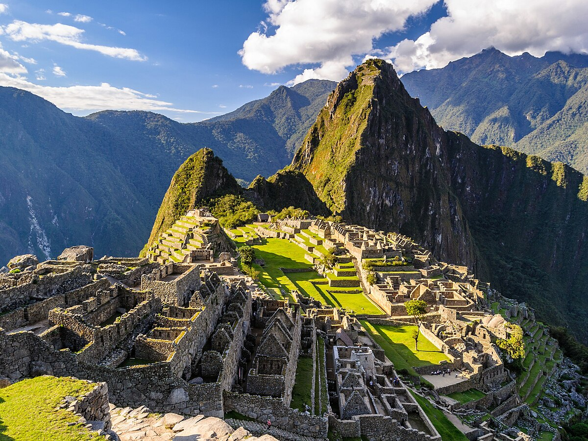

MACHU PICCHU(PERU)
MACHU PICCHU (PERU)

Machu Picchu es una ciudadela inca del siglo XV, ubicada en la Cordillera Oriental del sur del Perú,
a 2430 metros sobre el nivel del mar, en un entorno de extraordinaria belleza natural. Conocida como la "Ciudad Perdida de los Incas",
es uno de los destinos turísticos más populares del mundo.
Características principales:
Machu Picchu es el sitio arqueológico inca más sobresaliente debido a su creativo diseño urbano,
la belleza de su arquitectura y el fino trabajo en piedra de sus construcciones.
En su planificación se aprovechó notablemente la topografía de la cima de la montaña a la que transformó en una imponente llaqta.